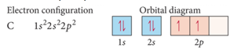

Week 5 - Day 2
Navigate using audio
-
What is the maximum number of electrons in a atom that can have the following set of quantum numbers?
- n = 4, l=3, m_l = 4, m_s = +1/2
- A
- It’s an illegal configuration
Orbital Diagrams
- Audio 0:02:47.403928
- we often represent an orbital as a square and the electrons in that orbital as arrows
- the direction of the arrow represents the spin of the electron
Electron Configuration for Multi-electron Atoms
- Audio 0:03:39.319084
- Aufbau Principle
- Energy levels and sublevels fill from lowest energy to highest
- Orbitals that are in the same sublevel have the same energy
- There can be no more than two electrons per orbital
- Pauli exclusion principle
- 
How you fill up orbitals
- Audio 0:05:03.542404
Summarizing the Filling of Electrons in
- Audio 0:10:29.597607
- Atomic Orbitals
- Electrons occupy orbitals so as to minimize the energy of the atom; therefore, lower energy orbitals fill before higher energy orbitals.
- Orbitals fill in the following order:
- 1s2s2p3s3p4s3d4p5s4d5p6s.
- Orbitals fill in the following order:
- Orbitals can hold no more than two electrons each. When two electrons occupy the same orbital, their spins are opposite.
- This is another way of expressing the Pauli exclusion principle (no two electrons in one atom can have the same four quantum numbers).
Order of Subshell Filling in Ground State Electron Configurations
- Audio 0:12:05.347386
- start by drawing a diagram putting each energy shell on a row and listing the subshells, (s, p, d, f), for that shell in order of energy, (left-to-right)
- next, draw arrows through the diagonals, looping back to the next diagonal each time
Order of orbitals (filling) in multi-electron atom
- Audio 0:13:08.640348

- 1s < 2s < 2p < 3s < 3p < 4s < 3d < 4p < 5s < 4d < 5p < 6s
- Smallest n+l. For equal n+l, largest l
Electron configuration Short Cut
- Audio 0:14:32.615145
- Ge: 1s2 2s2 2p6 3s2 3p6 4s2 3d10 4p2
- easier: [Ar] 4s2 3d10 4p2
- i.e. write [last noble gas] remainder of orbitals,
Example – Write the Ground State Electron Configuration and Orbital Diagram and of Magnesium.
- Audio 0:16:50.900804
- How many electrons in Magnesium?
- 12
- so need boxes for n=1, n=2 and n=3
Clicker 2
- Audio 0:22:03.927929
- Give the ground state electron configuration for Sr (Z=38)
- Audio 0:22:55.093958
- Look at periodic table. Rightmost element before Sr.
- Find Kr
- It is the second element past Kr, so it is Kr 5s2
Finding Patterns: The Periodic Law and the Periodic Table
- Audio 0:26:15.808183
- In 1869, Mendeleev noticed that certain groups of elements had similar properties.
- He found that when elements were listed in order of increasing mass, these similar properties recurred in a periodic pattern.
- To be periodic means to exhibit a repeating pattern.
The Periodic Law
- Audio 0:26:52.707876
- Mendeleev summarized these observations in the periodic law:
- When the elements are arranged in order of increasing mass, certain sets of properties recur periodically.
- Note: Mendeleev ignored some of data, e.g. atomic mass of Te > atomic mass of l
Mendeleev’s Periodic Table
- Audio 0:28:14.871013
- Mendeleev’s periodic table
- organized known elements of the time in a table format.
- He arranged the rows so that elements with similar properties would fall in the same vertical columns.
- contained some gaps, which allowed him to predict the existence (and even the properties) of yet undiscovered elements.
- Mendeleev predicted the existence of an element he called eka-silicon.
- organized known elements of the time in a table format.
The Modern Periodic Table: Its Format
- Audio 0:29:46.955888
- The elements are listed in order of increasing atomic number rather than increasing relative mass as they were in Mendeleev’s periodic table.
- Rows of the table are referred to as periods (or just plain rows).
- Columns in the table are referred to as groups or a family.
- Elements in a group or family have similar properties.
- NOTE: Mendeleev’s periodic law predicts pattern but does NOT explain why the patterns or similarity in properties occurs.
- Quantum theory explains the why
Modern Periodic Table
- Audio 0:31:45.843466
Core Electrons, Valence Electrons, and the Periodic Table
- Audio 0:32:14.303407
- The group number corresponds to the number of electrons in last (unfilled valence shell)
- valence electrons
- The length of each “block” is the maximum number of electrons the sublevel can hold.
- The period number corresponds to the principal energy level of the valence electrons.
Orbital blocks and their position in the periodic table
Transition and Inner Transition Metals
- Audio 0:34:11.820224
- Transition metals (d block) and inner transition metals (f block) exhibit trends differing from those of main-group elements (s block and p block).
- Because of sublevel splitting, the 4s sublevel is lower in energy than the 3d sublevel; therefore, the 4s orbital fills before the 3d orbital.
- The difference in energy is not large.
- Some of the transition metals have irregular electron configurations in which the ns only partially fills before the (n − 1)d or doesn’t fill at all.
- Therefore, their electron configuration must be found experimentally.
Examples of Transition and Inner Transition Metals’ Electron Configurations
- Audio 0:36:43.269485
- Remember chromium and copper
Clicker 3
- Give the ground state electron configuration for Br-
- [Ar]4s2 3d10 4p6
- has one more electron than normal because the sign is negative so 4p6
Electron Configuration and Elemental Properties
- Audio 0:42:21.308974
- The properties of the elements follow a periodic pattern.
- Elements in the same column have similar properties.
- The elements in a period show a pattern that repeats.
- The quantum-mechanical model explains this because the number of valence electrons and the types of orbitals they occupy are also periodic.
Electron Configuration and Elemental Properties: The Metals
- Audio 0:44:26.334942
Vocab
| Term | Definition |
|---|---|
| Aufbau principle | says energy levels and sublevels fill from lowest energy to highest |
| Hund’s rule | says every orbital in a subshell is singly occupied with one electron before any one orbital is doubly occupied, and all electrons in singly occupied orbitals have the same spin |
| periodic law | says that when the elements are arranged in order of increasing mass, certain sets of properties recur periodically |
| periods | rows of the periodic table |
| groups (family) | Columns in the periodic table |
| transition metals | d block of the periodic table |
| inner transition metals | f block of the periodic table |